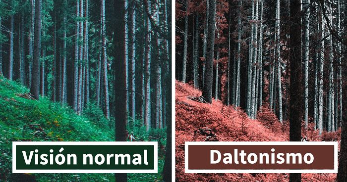

Bienvenidos a nuestra página de tests de daltonismo
Nuestra misión es ayudar a las personas a entender mejor su percepción del color. Ofrecemos tests de daltonismo diseñados para todas las edades: niños, adolescentes y adultos.
¿Qué es el daltonismo?
El daltonismo es una condición que afecta la capacidad de una persona para ver y distinguir colores. Puede ser leve, lo que significa que algunas personas pueden ver los colores correctamente en buena luz, pero tienen dificultades en luz tenue. En casos más graves, algunas personas no pueden distinguir ciertos colores en ningún tipo de luz.
Nuestros tests
Ofrecemos una variedad de tests para ayudar a identificar diferentes tipos de daltonismo. Estos tests son fáciles de realizar y están diseñados para ser divertidos y educativos.
¿Por qué es importante hacerse el test?
Identificar el daltonismo puede ayudar a las personas a entender mejor cómo ven el mundo. También puede ayudar a los padres y educadores a adaptar los métodos de enseñanza para los niños con daltonismo.
¡Comienza tu test hoy!
Nuestros tests son gratuitos y fáciles de realizar. ¡Empieza hoy mismo y descubre más sobre tu visión del color!
